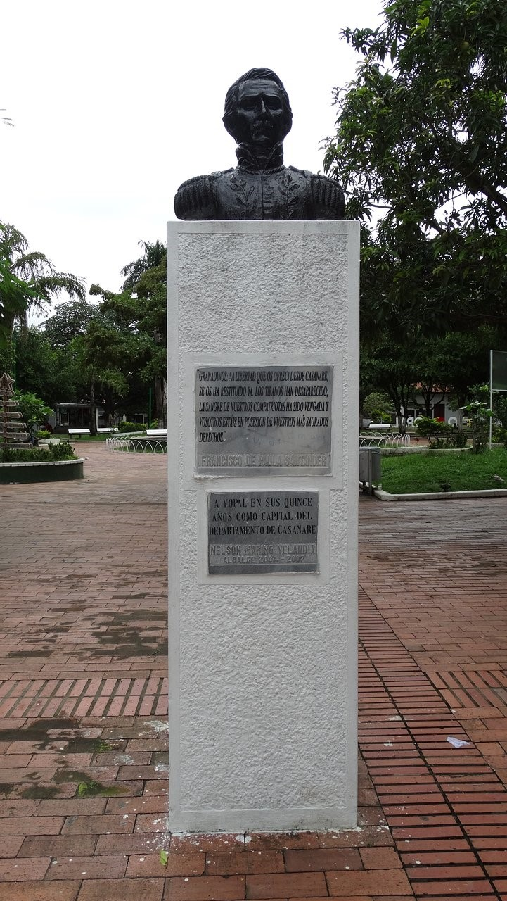
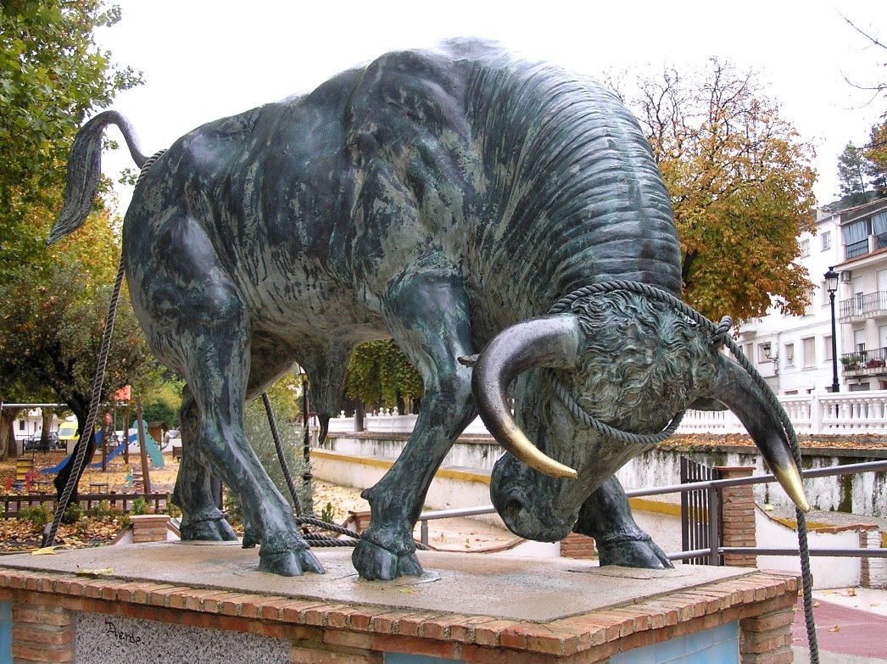
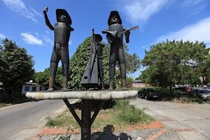
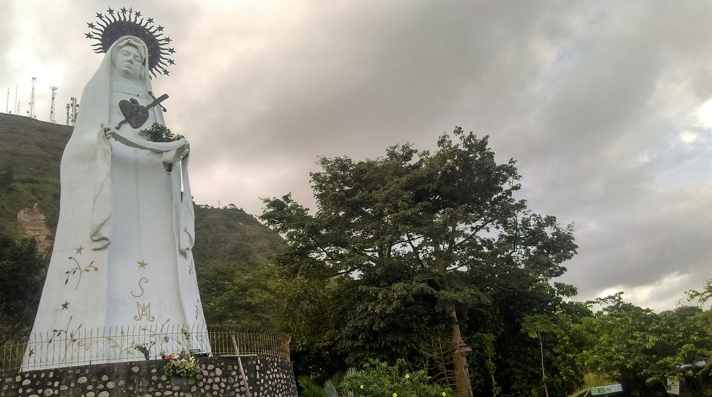
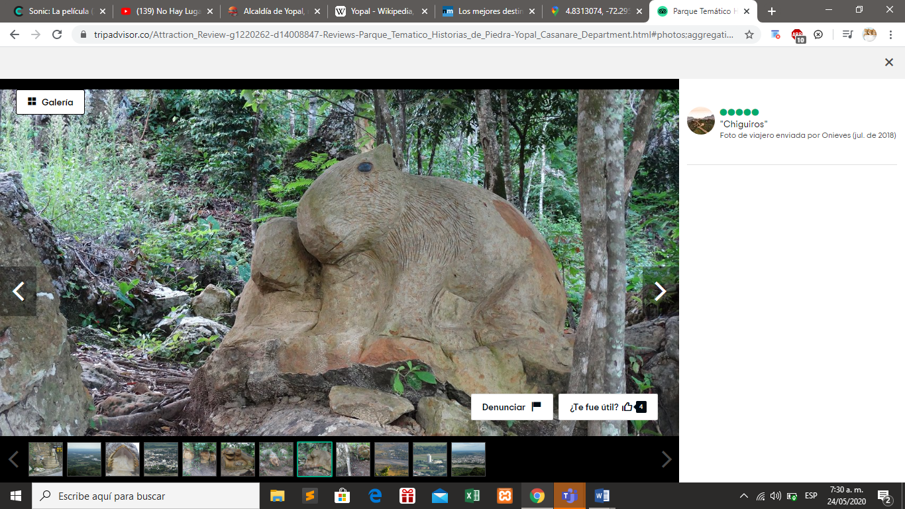

Francisco de Paula Santander

Escenario de todas las actividades cívicas, políticas y sociales más importantes. Su nombre fue asignado, en memoria al general Santander, quien fue enviado al Casanare para defender la causa de la libertad en la Nueva Granada. En él se encontraban sembrados árboles muy representativos y que fueron testimonio de muchas actividades, como el fauno, el totumo, el camoruco, matadepalo.
Dirección: Dirección: Cra. 21 #7-67. Yopal,Casanare.
Monumento Toro Lidia

Fue donado por el coronel ANDRES ALVAREZ BERBESI y creado por el artista VICTOR MEDINA SALAMANCA desde 1997 se encontraba ubicado en la via a morichal donde se construiría un complejo asociado al desarrollo ganadero, fue trasladada alas inmediaciones del estadio santia o de las atalayas en el año 2001.
Dirección: Calle 40 carrera 15. Yopal,Casanare.
Monumento al Joropo
“Con arpa, cuatro y maracas voy a cante a esta tierra llanera “
El monumento se erige como un homenaje a la música llanera en sus instrumentos tradicionales.
Direccrón: Carrera 15 #17-2 a 17-20. Yopal,Casanare.
Mirador la Virgen de Manare
Monumento ubicado a 3 km del vía la electrificadora cerro el Venado. Allí se encuentra la escultura de la virgen de Manare, patrona de los casanareños. Santuario religioso, también utilizado para la práctica del deporte, caminatas, muy visitado en la semana mayor por fieles que realizan el recorrido del vía crucis.
Carrera 17 #21-55. Yopal,Casanare.
Historias de piedra
Excelente parque temático, con figuras hechas en la piedra de la montaña, que presentan elementos culturales de la zona. Accesible para personas de todas las edades. Con un mirador maravilloso desde donde se puede apreciar una vista panorámica de toda la ciudad. Excelente para pasar un agradable rato en familia. Una de las mejores atracciones de la ciudad.
Ubicación: